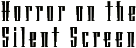
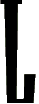

By Edith Sorenson
on Chaney's silent, leering Phantom of the Opera is a universal image of horror, and Max Schreck as the long-clawed, bald vampire of Nosferatu is a monster deliciously familiar to hard-core horror fans. Although both creatures' popularity has been proven by parodies on The Simpsons, many of Chaney's bizarre characters, and black-and-white immortals such as Vampyr, and She ... Who Must Be Obeyed have yet to be seen in midnight movies or cult videos.
These lesser-known horrors have been rotting in vaults, while the classic nightmares of the silent era were painfully represented by damaged, bleary flickers, but now, just in time for Halloween, Kino Video has released a catalog of seminal horror films and almost-forgotten episodes of the uncanny, all digitally remastered and restored to their original glory.
The Phantom of the Opera is the centerpiece of the collection, and is not only a powerful, eerie, and twisted tragedy, but also proof that everything you know about silent movies is wrong. Silent film is an art form known mostly from low-quality clips shown at the wrong speed and to skating-rink organ music. Flickering, badly scored snippets are poor examples.
Horror


T H R E A D S : 16 topics, 25 links.
Copyright © 1995 HotWired Ventures LLC. All rights reserved.